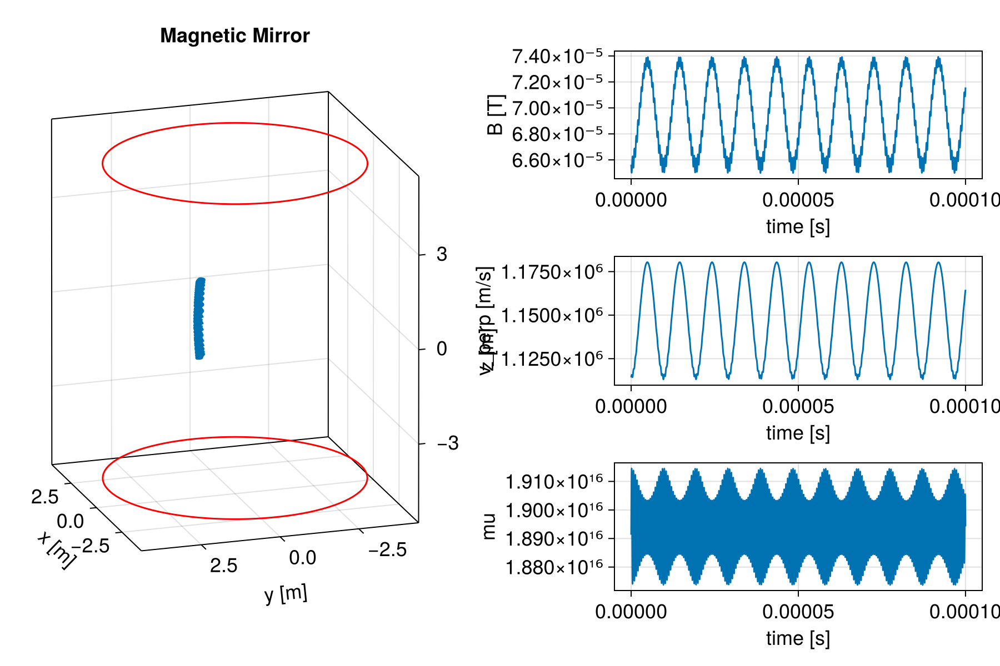

Magnetic mirror


This example demonstrates the particle motion trajectory in a magnetic mirror and also illustrates the conservation of magnetic moment. From the third figure on the right, it can be seen that the zero-order quantity of magnetic moment is conserved, but its high-order part is not conserved under this definition of magnetic moment and oscillates rapidly. We can observe from this the oscillation characteristics of magnetic moments at different levels.
This example is based on demo_magneticbottle.jl.
using TestParticle, OrdinaryDiffEq, StaticArrays
import TestParticle as TP
using LinearAlgebra: normalize, norm, ⋅
using CairoMakie
### Obtain field
# Magnetic mirror parameters in SI units
const I = 20.0 # current in the solenoid [A]
const N = 45 # number of windings
const distance = 10.0 # distance between solenoids [m]
const a = 4.0 # radius of each coil [m]
getB(xu) = SVector{3}(TP.getB_mirror(xu[1], xu[2], xu[3], distance, a, I*N))
getE(xu) = SA[0.0, 0.0, 0.0]
# velocity in the direction perpendicular to the magnetic field
function v_perp(t, x, y, z, vx, vy, vz)
xu = SA[x, y, z, vx, vy, vz]
vu = @view xu[4:6]
B = getB(xu)
b = normalize(B)
v_pa = (vu ⋅ b) .* b
(t, norm(vu - v_pa))
end
# magnetic field
absB(t, x, y, z) = (t, sqrt(sum(x -> x^2, getB(SA[x, y, z]))))
# μ, magnetic moment
function mu(t, x, y, z, vx, vy, vz)
xu = SA[x, y, z, vx, vy, vz]
(t, v_perp(t, x, y, z, vx, vy, vz)[2]^2 / sqrt(sum(x -> x^2, getB(xu))))
end
Et(xu) = sqrt(xu[4]^2 + xu[5]^2 + xu[6]^2)
### Initialize particles
m = TP.mₑ
q = TP.qₑ
c = TP.c
# initial velocity, [m/s]
v₀ = [2.75, 2.5, 1.3] .* 0.001c # confined
##v₀ = [0.25, 0.25, 5.9595] .* 0.01c # escaped
# initial position, [m]
r₀ = [0.8, 0.8, 0.0] # confined
##r₀ = [1.5, 1.5, 2.4] # escaped
stateinit = [r₀..., v₀...]
param = prepare(getE, getB; species = Electron)
tspan = (0.0, 1e-4)
prob = ODEProblem(trace!, stateinit, tspan, param)
# Default Tsit5() and many solvers does not work in this case!
# AB4() has better performance in maintaining magnetic moment conservation compared to AB3().
sol_non = solve(prob, AB4(); dt = 3e-9)
### Visualization
f = Figure(size = (900, 600), fontsize = 18)
ax1 = Axis3(f[1:3, 1],
title = "Magnetic Mirror",
xlabel = "x [m]",
ylabel = "y [m]",
zlabel = "z [m]",
aspect = :data,
azimuth = 0.9π,
elevation = 0.1π
)
ax2 = Axis(f[1, 2], xlabel = "time [s]", ylabel = "B [T]")
ax3 = Axis(f[2, 2], xlabel = "time [s]", ylabel = "v_perp [m/s]")
ax4 = Axis(f[3, 2], xlabel = "time [s]", ylabel = "mu")
lines!(ax1, sol_non, idxs = (1, 2, 3))
lines!(ax2, sol_non, idxs = (absB, 0, 1, 2, 3))
lines!(ax3, sol_non, idxs = (v_perp, 0, 1, 2, 3, 4, 5, 6))
lines!(ax4, sol_non, idxs = (mu, 0, 1, 2, 3, 4, 5, 6))
# Plot coils
θ = range(0, 2π, length = 100)
x = a .* cos.(θ)
y = a .* sin.(θ)
z = fill(distance/2, size(x))
lines!(ax1, x, y, z, color = :red)
z = fill(-distance/2, size(x))
lines!(ax1, x, y, z, color = :red)
# # The distribution of magnetic field along the z-axis or x-axis
# Bz(z) = hypot(getB(SA[0.0, 0.0, z])...)
# Bx(x) = hypot(getB(SA[x, 0.0, 0.5*distance])...)
# z = collect(-10:0.01:10)
# x = collect(-0.99*a:0.01:0.99*a)
# # Ba = Bz.(z)
# Ba = Bx.(x)
# # lines(z, Ba, color=:red)
# lines(x, Ba, color=:red)

This page was generated using DemoCards.jl and Literate.jl.